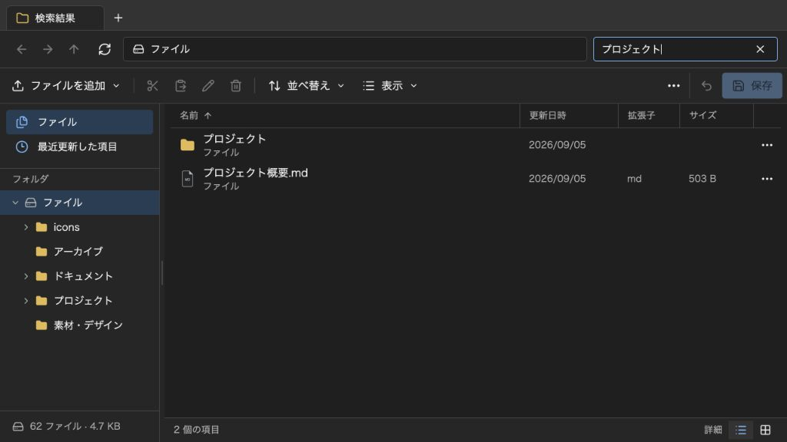

@likex/explorer
検索
条件UIの差し込み、抜粋付きの逐次表示、未取得項目を含む外部検索結果の取り込みに対応します。
画面例を見る ↓入力時とEnter確定時の検索、詳細条件、検索UIの差し替え、および親へ委譲する検索と結果の逐次表示の型・実装例です。
検索の実行タイミングと外部検索#
search と onSearchRequest を省略すると、現在の下書きにある全項目を対象に、名前を入力と同時に検索します。現在のフォルダ配下だけの検索ではありません。検索語の前後の空白は除去し、空になれば通常のフォルダ・お気に入り・最近の一覧へ戻ります。IME変換中は検索を実行しません。
onLoadFolder で遅延読み込みしている場合、内蔵検索は取得済みキャッシュを対象にします。未取得を含む全件を検索するには、利用側の onSearchRequest でサーバー等を検索し、ヒットと必要な項目・祖先のメタデータを { hits, entries } で返します。Explorerは検索サービスを実装せず、渡されたメタデータの検証・追加・表示を担当します。
入力時・Enter確定時を選ぶ#
// 既定：内蔵の名前検索を入力と同時に実行
<Explorer initialEntries={entries} />
// 入力中の文字と確定した検索語を分け、Enterで検索
<Explorer initialEntries={entries} search={{ trigger: "submit" }} />
// 外部検索だけを、最後の入力から300 ms待って実行
<Explorer
initialEntries={entries}
search={{ trigger: "input", debounceMs: 300 }}
onSearchRequest={searchFiles}
/>上の entries と searchFiles は親が用意します。submit では入力を編集しても確定済みの検索結果を維持し、Enterで新しい検索語を確定します。同じ語でEnterを押し直すと再検索でき、外部データの再確認にも使えます。IMEの変換確定に使うEnterでは検索しません。
ExplorerSearchOptions の trigger は "input" が既定です。debounceMs の既定は 0 で、外部ハンドラーを指定した input 検索だけに適用します。内蔵の名前検索と submit の確定は待機させません。検索をクリアしたときは待たずに通常一覧へ戻り、空の語で onSearchRequest を呼びません。
公開型と結果の契約#
ExplorerSearchOptions、ExplorerSearchConditions、ExplorerSearchRequest、ExplorerSearchContext、ExplorerSearchHandler、ExplorerSearchHit、ExplorerSearchResult、ExplorerSearchBatch、ExplorerSearchResponse、ExplorerSearchStream、ExplorerSearchRenderContext、ExplorerSearchRenderer、ExplorerSearchResultRenderContext、ExplorerSearchResultRenderer は公開入口からimportできます。Explorer と ExplorerPopup で同じpropsを使えます。
import type {
ExplorerSearchHandler,
ExplorerSearchRequest,
ExplorerSearchContext,
} from "@/components/explorer";
const searchFiles: ExplorerSearchHandler = (
request: ExplorerSearchRequest,
context: ExplorerSearchContext,
) => {
if (context.signal.aborted) return [];
return request.entries
.filter(entry => entry.name.includes(request.query))
.map(entry => entry.id);
};| 要求・戻り値 | 契約 |
|---|---|
request.query | 前後の空白を除去した検索語。空文字の要求は送りません。 |
request.conditions | 確定済みの matchCase / wholeName / useRegex。外部ハンドラーが条件の意味を適用します。 |
request.params | search.params を確定時点でコピーした読み取り専用の追加条件。JSON互換のオブジェクトで、内部の配列・オブジェクトも固定します。 |
request.entries | readonly ExplorerEntry[]。要求時点の下書きで、未保存の追加・改名・移動も含みます。遅延読み込み時はキャッシュの範囲であり、サーバーの全件ではありません。配列・項目・source を変更しないでください。 |
request.location | ExplorerLocationInfo。通常フォルダは kind: "folder" と id・name・path、お気に入り・最近は kind: "favorites" | "recent" と id: null・path: null。外部検索の範囲は親が決めます。 |
request.tabId / windowId | 要求元のタブ・ウィンドウのID。要求の各フィールドは読み取り専用です。 |
context.signal | AbortSignal。fetch 等の取消しに渡します。 |
| 戻り値 | ExplorerSearchResponse | ExplorerSearchStream | Promise<ExplorerSearchResponse | ExplorerSearchStream>。Responseは従来のID／hit配列、または { hits, entries }。ストリームは追加分のResponseを順に返します。IDはファイル本体の source.id ではなく entry.id です。 |
返されたIDから現在の項目を表示します。必要なメタデータがない未知IDと重複hit IDは無視し、同じIDが複数ある場合は最初の出現とその補足情報を使います。{ hits, entries } では同じバッチのメタデータを取り込んでからhit IDを解決します。返却順をそのまま保つため、外部検索中は通常の名前順・フォルダ優先・最近順で並べ直さず、並べ替えUIを隠します。[] は正常な0件の結果です。通信や解析の失敗はthrow / rejectで伝え、正常な0件へ置き換えないようにします。
検索語・タブ・現在地・下書きが変わると古い要求を中断し、新しい条件の検索を扱います。クリア、外部検索の解除、features.search: false、アンマウントでも中断します。ハンドラーがsignalを無視して後から完了しても、古い結果は反映しません。features.search: false は検索欄・ショートカット・内蔵検索・外部要求をまとめて無効にします。
親の再レンダーで onSearchRequest の関数参照だけが変わっても、再検索しません。インライン関数を渡すことができ、最新のコールバックが読むキャッシュや親stateは、次の検索語変更・Enter確定・下書きや現在地の変更等で使います。検索条件として扱う親stateは search.params に渡してください。そのJSON内容が変われば input では再検索し、submit では次のEnterまで確定済み条件を維持します。
検索結果の場所を確認する#
詳細表示の検索結果では、名前の右に「場所」列を表示します。値は対象が入っている親フォルダの絶対パスで、例えば /営業資料/2026年度、ルート直下は / です。ファイル本体のURLや source.id ではありません。名前の下の従来のパスは場所列へ移し、重複表示しません。通常のフォルダ一覧では場所列を隠し、ほかの表示形式は従来どおりです。
場所列もドラッグやキーボードで幅を変えられます。初期幅は240px、範囲は140〜2000pxで、view.defaultColumnWidths.location に初期幅を指定できます。検索終了で列が隠れても幅を保持します。列幅の設定を参照してください。場所列による並べ替えは追加せず、外部検索の返却順・順位を維持します。
検索結果から格納先へ移動する#
検索結果のファイルを右クリックするか、その行の「…」メニューから「フォルダを開く」を選ぶと、親フォルダの通常一覧へ移動して対象ファイルを選択します。検索結果のフォルダには既存の「開く」があり、そのフォルダの中へ移動します。どちらも読み取り専用で使えます。選択を無効にしている場合は、選択せずに移動します。
利用側からは explorerRef.current?.openContainingFolder({ id: "file-a" }) を呼び出せます。このAPIはファイル・フォルダの両方を受け付け、常に対象の親へ移動します。対象と祖先はキャッシュ上で解決し、遅延読み込みで親の直下一覧が未取得なら通常の onLoadFolder により取得します。公開APIとエラーを参照してください。
「戻る」で検索語・詳細条件・選択を復元します。同じフォルダ内で検索結果から通常一覧へ移った場合も戻れます。submit 方式では入力中の語・条件と確定済みの語・条件を分けて保存します。外部検索の結果自体は履歴に固定せず、当時の確定済み検索語・条件・params で onSearchRequest を再実行します。途中の検索は中断し、新しく返った結果に基づいて表示します。
履歴はホストが管理する search.params の入力UIやstateを書き換えません。復元後に検索入力・詳細条件・ホストの params を変更すると、以降の検索には現在のpropsの条件を使います。利用側のフィルターUIと復元された条件を同じものとして扱わないようにしてください。
見つかった結果から逐次表示する#
ExplorerSearchStream は AsyncIterable<ExplorerSearchResponse> です。ハンドラーにasync generatorを渡すと、yield した配列または { hits, entries } を受信するたびに結果へ追加します。既存の同期配列やPromiseを返すハンドラー、配列だけをyieldするgeneratorもそのまま使えます。準備処理を待ってから Promise<ExplorerSearchStream> を返すこともできます。
import type { ExplorerSearchHandler } from "@likex/explorer";
const searchFiles: ExplorerSearchHandler = async function* (request, { signal }) {
// 利用側の検索APIが、追加分のバッチを返すAsyncIterableを提供する例です。
for await (const batch of searchIndexInBatches(request.query, request.params, signal)) {
signal.throwIfAborted();
yield batch.map(hit => ({
entryId: hit.entryId,
snippet: hit.excerpt,
reason: hit.reason,
metadata: { customerName: hit.customerName, meetingDate: hit.meetingDate },
}));
}
};
<Explorer initialEntries={entries} onSearchRequest={searchFiles} />searchIndexInBatches は利用側で実装します。ページ単位のHTTP応答やSSE等からバッチを組み立て、通信・本文取得の中断には渡された signal を使います。検索サービスの結果を渡す時点で、表示権限の確認と形式の検証も行ってください。
各 yield は新たに見つかった分です。前回までの全結果を返し直したり、差し替え・削除を指示したりする形式ではありません。hit配列内の順序を保ち、バッチを受信した順に末尾へ追加します。バッチをまたぐ重複hit IDも最初の出現と補足情報を使い、メタデータがない未知IDは表示しません。空バッチ [] は追加なしで処理を続け、generatorの終了を検索完了として扱います。
受信済みの結果は検索中も表示・選択できます。renderSearch の searching はストリーム終了までtrueで、0件の確定表示は終了後に行います。途中でthrow / rejectや入力検証エラーが起きた場合は、そこまでに受信した正常なバッチを保持してエラーを表示します。再試行では検索を最初から実行します。
新しい検索条件の確定、タブの切替・終了、検索のクリア等で中断し、後から届いたバッチは反映しません。submit では未確定の入力や条件変更だけでは検索を切り替えず、確定済みの検索を続けます。利用側も signal を監視し、通信・タイマー・ストリームの読み込みを終了してください。
上限はバッチごとにリセットしません。1回の検索で受信した配列は累積100,000件、累積5,000,000 JSON文字までです。重複・未知IDとして表示しなかった受信分も累積に含めます。抜粋・理由・metadataの各上限も通常の配列と同じで、違反したバッチは反映せず、正常に受信済みの結果を残します。
未取得の項目を検索結果と一緒に渡す#
外部の検索サービスが未取得のファイルを見つけた場合は、hitだけでなく表示に必要な ExplorerEntry と未取得の祖先フォルダを返します。利用側が渡すメタデータを受け入れるため、onLoadFolder による部分キャッシュの利用が必要です。
type ExplorerSearchBatch = Readonly<{
hits: ExplorerSearchResult;
entries: readonly ExplorerEntry[];
}>;
type ExplorerSearchResponse = ExplorerSearchResult | ExplorerSearchBatch;
type ExplorerSearchStream = AsyncIterable<ExplorerSearchResponse>;| フィールド | 用途 |
|---|---|
hits | 検索結果の順位順のID／ExplorerSearchHit。従来の配列と同じ |
entries | ヒット項目と必要な祖先のメタデータ。各IDはバッチ内で一度だけ。親が先に並んでいる必要はない |
ExplorerSearchHit.metadata は顧客・会議日など補足表示用の業務情報です。それだけでは未知のファイルを追加できません。ID・名前・親・種類・日時・本体参照等を持つ ExplorerEntry を entries に渡してください。ファイル本体やワークスペース全件を含める必要はありません。
import type { ExplorerSearchHandler } from "@likex/explorer";
const searchFiles: ExplorerSearchHandler = async function* (request, { signal }) {
// searchRemoteIndexは利用側のAPI。各pageはhitと最小限の祖先を返す。
for await (const page of searchRemoteIndex({
query: request.query, conditions: request.conditions, params: request.params,
}, { signal })) {
signal.throwIfAborted();
yield { hits: page.hits, entries: page.entries };
}
};
<Explorer initialEntries={[]} onLoadFolder={loadFolder}
onSearchRequest={searchFiles} />searchRemoteIndex と loadFolder は利用側で実装し、サーバーで閲覧権限を確認します。検索語の解釈、ファイル名・本文・パスのどこを検索するか、検索索引、ページ取得、ランキングは利用側の責務です。ライブラリに検索サービスやLLMへの接続は追加しません。
新しい項目は比較元と下書きの両方へ追加し、それだけでは未保存や編集の change を発生させません。実際に追加した場合は search-hydrate の addedCount を通知します。検索をクリア・中断しても、それまでに取り込んだ正常なメタデータはキャッシュに残ります。hitの抜粋や業務metadataの表示は、従来どおり検索結果の寿命に従います。
検索で受け取ったフォルダは直下を取得済みとは扱いません。後で開く・展開する際は onLoadFolder で残りの直下一覧を取得します。保存は引き続き scope.kind: "partial" の契約で、entries をサーバー全体として置き換えず差分を保存します。
既存IDの項目や祖先も含められますが、既存の名前・本体参照等を上書き更新する用途には使いません。取得済みの比較元と同じ親・種類であることを確認し、ローカルでの改名・移動・削除を維持します。削除した項目を復活させません。祖先の欠落、バッチ内の重複entry ID、異なる親・種類のID衝突、ローカル新規IDとの衝突、兄弟名の衝突、削除済み親配下への新規追加などはバッチ全体のエラーです。正常な前のバッチは残ります。
hits の上限とは別に、entries も1検索の累積100,000件まで、ID・親ID・名前・MIME・日時・本体参照IDなど既知文字フィールドの累積5,000,000文字までに制限します。同じentry IDを別バッチで再受信した分も累積に含めるため、利用側で既に送った祖先は省くと効率的です。純粋なモデル関数の mergeExplorerSearchEntries は単一バッチの検証・マージのみを行い、検索全体の累積上限・中断はExplorer側が管理します。
詳細条件#
標準検索欄の「検索オプション」で次の条件を切り替えられます。既定はすべてfalseで、大小を区別しない部分一致です。
| 条件 | 動作 |
|---|---|
matchCase | 大文字と小文字を区別する |
wholeName | 拡張子を含むファイル名全体に一致させる |
useRegex | 検索語をRE2形式の正規表現として扱う |
正規表現の ^ / $、文字クラス、選択、繰り返しなどに対応します。先読み・後読み・後方参照などRE2で扱えない式、不正な式、上限を超える式は検索エラーにします。正規表現は最大4,096文字、通常の検索語は最大100,000文字です。正規表現が空文字にも一致する場合はそのファイル名も結果に含みます。巨大なパターンは内部状態数の制限でも拒否する場合があります。
条件はタブ単位に保持し、別ウィンドウへ移したタブにも引き継ぎます。input は変更した条件で即時検索、submit は次のEnterまたは検索ボタンまで現在の結果と選択を保ちます。クリアは検索語だけを消し、条件は残します。
検索UIを外側から組み立てる#
renderSearch で検索エリアの中身を差し替えます。標準入力を defaultInput、詳細条件を defaultOptions として別々に配置でき、入力から生成した正規表現や任意の説明・選択肢も表示できます。
import Explorer, { type ExplorerSearchRenderer } from "@likex/explorer";
const renderSearch: ExplorerSearchRenderer = context => (
<div style={{ display: "flex", flexWrap: "wrap", gap: 6, width: "100%" }}>
{context.defaultInput}
{context.defaultOptions}
{context.conditions.useRegex && <code style={{ flexBasis: "100%" }}>
適用する式: {context.query || "（未入力）"}
</code>}
</div>
);
<Explorer initialEntries={entries} renderSearch={renderSearch} />ExplorerSearchRenderContext の契約は次の通りです。
| プロパティ | 用途 |
|---|---|
query / setQuery(value) | 未確定の入力文字とその変更。検索タイミングは search.trigger に従う |
conditions / setConditions(patch) | このタブの詳細条件。patchで指定した項目だけを変更 |
params | 親からの追加条件。変更は親のstate更新を通して search.params へ渡す |
submit() / clear() | 入力・条件を確定して検索／検索語を消す |
trigger / searching / error | 実行タイミング、処理中、確定した検索のエラー |
inputProps | 標準inputのvalue、イベント、ref、IME処理、Enter、最大長、アクセシビリティ属性 |
defaultInput / defaultOptions | 再利用できる標準コントロールのReactElement |
完全に独自の入力欄へ変える場合は <input {...context.inputProps} className="my-search" /> のように使います。refとイベントを保つことでCtrl/⌘+F・KのフォーカスとIME確定を維持できます。setQuery を別のコントロールから呼ぶ場合も、検索の取消し・結果の更新は本体が扱います。レンダラーの戻り値がnull/undefinedなら標準表示、falseなら非表示です。フックを使う場合はレンダラー内で直接呼ばず、返すReactコンポーネント内で使ってください。
任意の追加条件を外部検索へ渡す#
const [extension, setExtension] = useState("");
<Explorer
initialEntries={entries}
search={{ trigger: "submit", params: { extension } }}
renderSearch={context => <>
{context.defaultInput}{context.defaultOptions}
<select aria-label="対象拡張子" value={extension}
onChange={event => setExtension(event.target.value)}>
<option value="">すべて</option><option value="xlsx">Excel</option>
</select>
</>}
onSearchRequest={async ({ query, conditions, params }, { signal }) => {
const response = await fetch("/api/files/search", {
method: "POST", signal,
headers: { "Content-Type": "application/json" },
body: JSON.stringify({ query, conditions, ...params }),
});
if (!response.ok) throw new Error("検索に失敗しました");
return await response.json(); // 実際にはID配列の形式も検証する
}}
/>search.params はJSON互換のオブジェクトのみ受け付け、安定したJSON表現で100,000文字までに制限します。循環参照・BigInt・Date・関数などは検索エラーとして表示します。同じJSON内容のインラインオブジェクトを渡し直しても再検索しません。後から親がオブジェクトを書き換えても確定済み条件は変わりません。更新は新しいオブジェクトを渡して行ってください。submit の再試行は確定済みparamsで実行し、新しいparamsはEnterで取り込みます。input ではparamsの変更もdebounceの対象です。IME中の変更は変換完了まで待ちます。
追加条件を解釈するのは onSearchRequest です。組み込みの検索は params の拡張子や日付などを自動では適用せず、ファイル名と3つの詳細条件を使います。外部検索に切り替えた場合、request.conditions の適用・正規表現の解釈も親が担当します。
顧客・会議日などの業務条件と自然言語検索#
「先月の顧客会議で、契約更新について話した議事録」のような検索では、利用側のUIや検索サービスが自然言語から条件を取り出し、search.params に customerId、meetingDateFrom、meetingDateTo、documentType などを渡せます。これらは利用側で決めるキーです。onSearchRequest が検索語と追加条件を検索サービスへ送り、認可済みの項目IDを検索順位順に返します。Explorer自体は自然言語の解析や業務条件の推定を行いません。
ファイルの更新日時（updatedAt）と会議の開催日（meetingDate）は別の属性として管理してください。後日編集した議事録を会議日の検索から落とさないよう、会議日は利用側のメタデータや検索索引に保持します。search.params の日付・日時には Date オブジェクトではなくISO形式の文字列を渡し、日付だけなら 2026-09-01、時刻を含むなら 2026-09-01T10:00:00+09:00 のように表します。期間の境界や「先月」の基準タイムゾーンも利用側で決めます。
検索結果には項目IDに加えて snippet（本文の抜粋）、reason（検索理由）、metadata（業務情報）を返せます。抜粋・理由は標準で名前の下に平文表示し、業務情報やハイライトの表示は renderSearchResult で利用側が組み立てます。
検索結果の抜粋・理由・表示を追加する#
onSearchRequest は従来のID文字列と補足情報付きの結果を混在させられます。snippet / reason は省略・空文字も許可します。
import type { ExplorerSearchHandler, ExplorerSearchResultRenderer } from "@likex/explorer";
const searchMeetings: ExplorerSearchHandler = async (request, { signal }) => {
const hits = await searchMeetingIndex(request.query, request.params, signal);
return hits.map(hit => ({
entryId: hit.entryId,
snippet: hit.excerpt,
reason: hit.reason,
metadata: { customerName: hit.customerName, meetingDate: hit.meetingDate },
}));
};
const renderSearchResult: ExplorerSearchResultRenderer = ({ hit, defaultContent }) => <>
<div>{String(hit.metadata?.customerName ?? "")} · {String(hit.metadata?.meetingDate ?? "")}</div>
{defaultContent}
</>;
<Explorer initialEntries={entries} onSearchRequest={searchMeetings}
renderSearchResult={renderSearchResult} search={{ trigger: "submit", resultDetailsHeight: 96 }} />searchMeetingIndex は利用側の検索サービスです。返された業務情報は検索時点の表示用スナップショットで、ファイル本体や ExplorerEntry、保存データ、未保存判定を更新しません。通常一覧に戻ると表示から消え、次の検索で置き換わります。submit方式では未確定の入力・条件を変更しても、確定済みの結果と補足情報を維持します。
ExplorerSearchResultRenderContext | 内容 |
|---|---|
entry | パス等を含む現在の ExplorerItemInfo |
hit | entryId、任意の snippet・reason・metadata。IDだけの結果も { entryId } として受け取る |
query | 確定済みの検索語。未確定の入力ではない |
view / selected | 現在の表示モードと選択状態 |
defaultContent | 抜粋と理由を平文で表示する標準のReactElement |
レンダラーが差し替えるのは名前の下の補足領域だけです。ファイル名、アイコン、選択・プレビュー・右クリック・名前変更の操作は本体が保持します。外部検索の結果に対してのみ呼び、通常のフォルダ表示や内蔵の名前検索では呼びません。null / undefined は標準表示、false は補足内容を隠します。フックや非同期処理は、レンダラーから返すReactコンポーネントの中で使ってください。
標準は snippet / reason をHTMLとして解釈せず表示します。metadata は意味を決めずに渡すJSONオブジェクトで、標準UIは自動展開しません。Date はISO形式の文字列に変換してください。取り込み時に複製し、ネストした配列・オブジェクトも読み取り専用に固定します。応答は最大100,000件、抜粋と理由は各10,000 UTF-16文字、metadataは1件100,000 JSON文字、応答全体は5,000,000 JSON文字です。逐次応答の件数と全体サイズは累積で適用します。形式や上限に違反した応答は検索エラーとして扱います。
全表示モードで仮想化の行高を保つため、補足領域は固定の高さと枠内スクロールを使います。search.resultDetailsHeight はpx単位で既定72、有限値は24〜480に収め、非数値・非有限値は既定値を使います。標準で補足のある結果が1件以上ある場合、またはレンダラーを指定した場合は、同じ一覧の全行に同じ高さを確保します。false を返した行も高さは残ります。IDだけの結果でレンダラーもない場合は従来の行高を使います。
補足内のダブルクリックはファイルを開かず、通常のテキスト選択に使えます。枠にフォーカスすれば矢印キーでスクロールできます。標準のbutton・a・input・select・textarea等やrole=button/linkのクリック・ドラッグ開始は親行へ伝播させず、枠内のキーボード操作も保持します。それ以外の独自コントロールを置く場合は、親行の選択・開く・ドラッグ処理へ意図せず伝わらないよう、必要なイベントの stopPropagation() を利用側で設定してください。例えば操作パネルのラッパーに onPointerDown、onClick、onDoubleClick、onKeyDown を設定し、ドラッグを開始させないコントロールでは onDragStart で preventDefault() と stopPropagation() を呼びます。コンテキストメニューの扱いも利用側のコントロールに合わせて選べます。
従来の string[] を返す検索コールバックはそのまま利用できます。利用側が ExplorerSearchHandler を直接呼ぶ場合は、Promiseを解決した後に配列・{ hits, entries }・AsyncIterableを判別してください。hit配列の正規化には @likex/explorer/model の resolveExplorerSearchIds / resolveExplorerSearchHits を使えます。これらは1つのhit配列を対象とし、entryの追加やストリームの読み込み・バッチをまたぐ重複排除や累積上限の管理は行いません。Explorer本体へハンドラーを渡せば、それらの管理とキャンセルは本体が扱います。
親の本文キャッシュを検索する#
Explorerは検索のために readFile や File.text() を自動で呼びません。親が取得・抽出済みの本文をキャッシュしている場合は、名前と本文を組み合わせて検索できます。既存本体は source.id、未保存のローカル本体は source.file をキーにする例です。
"use client";
import Explorer, {
type ExplorerEntry,
type ExplorerSearchHandler,
} from "@/components/explorer";
type Props = {
initialEntries: readonly ExplorerEntry[];
textBySourceId: ReadonlyMap<string, string>;
localTextByFile: ReadonlyMap<File, string>;
};
export function CachedContentExplorer({
initialEntries, textBySourceId, localTextByFile,
}: Props) {
const onSearchRequest: ExplorerSearchHandler = ({ query, entries }, { signal }) => {
if (signal.aborted) return [];
const needle = query.toLocaleLowerCase("ja-JP");
return entries.filter(entry => {
const source = entry.source;
const text = source?.kind === "existing"
? textBySourceId.get(source.id) ?? ""
: source?.kind === "local"
? localTextByFile.get(source.file) ?? ""
: "";
return `${entry.name}\n${text}`.toLocaleLowerCase("ja-JP").includes(needle);
}).map(entry => entry.id);
};
return <Explorer
initialEntries={initialEntries}
onSearchRequest={onSearchRequest}
style={{ height: 640 }}
/>;
}本文の取得・形式ごとのテキスト抽出・容量制限・更新時のキャッシュ無効化は親が管理します。この例はキャッシュにない本体を読み込まず、名前だけを検索します。キャッシュを更新した後は検索語を変更するか、Enterで再検索します。
セマンティック検索APIへ接続する#
次は、親が実装した同一オリジンの検索APIへ接続する最小例です。APIは query と folderId を受け取り、順位順のID配列（例：["file-7", "file-3"]）を返す想定です。下書き全体や File は送信しません。
"use client";
import Explorer, {
type ExplorerEntry,
type ExplorerSearchHandler,
} from "@/components/explorer";
function parseSearchIds(value: unknown): readonly string[] {
if (!Array.isArray(value) || !value.every(
(id: unknown): id is string => typeof id === "string" && id.length > 0,
)) {
throw new Error("検索APIの応答は空でない文字列IDの配列である必要があります");
}
return value;
}
const searchFiles: ExplorerSearchHandler = async ({ query, location }, { signal }) => {
const response = await fetch("/api/files/search", {
method: "POST",
headers: { "Content-Type": "application/json" },
body: JSON.stringify({
query,
folderId: location.kind === "folder" ? location.id : null,
}),
signal,
});
if (!response.ok) throw new Error(`検索に失敗しました (${response.status})`);
const value: unknown = await response.json();
return parseSearchIds(value);
};
export function SemanticExplorer({ entries }: { entries: readonly ExplorerEntry[] }) {
return <Explorer
initialEntries={entries}
search={{ trigger: "submit" }}
onSearchRequest={searchFiles}
style={{ height: 640 }}
/>;
}この例では通常フォルダのIDを渡し、お気に入り・最近では null を渡します。null の範囲や、本文検索・ベクトル検索・メタデータ検索の組み合わせは親のAPIで定義します。認証、対象ワークスペース、フォルダ・項目の閲覧権限はサーバーで検証します。クライアントからの folderId やID一覧を権限として信用せず、認可済みの結果だけを返してください。
上のID配列だけの例では、現在のキャッシュにないIDは表示しません。未取得の結果も表示する場合は onLoadFolder を用意し、検索サービスが必要な項目と祖先を取得して { hits, entries } を返す形式にします。バックエンドに未保存の source.kind === "local" の File は索引にないため、必要なら親がローカル本文キャッシュの結果と合成してIDを返します。未保存の改名・移動・新規フォルダもサーバーには未反映であることを考慮します。
画面例

